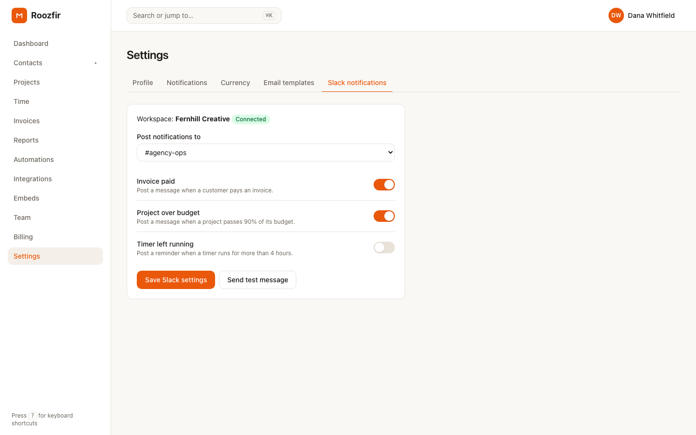
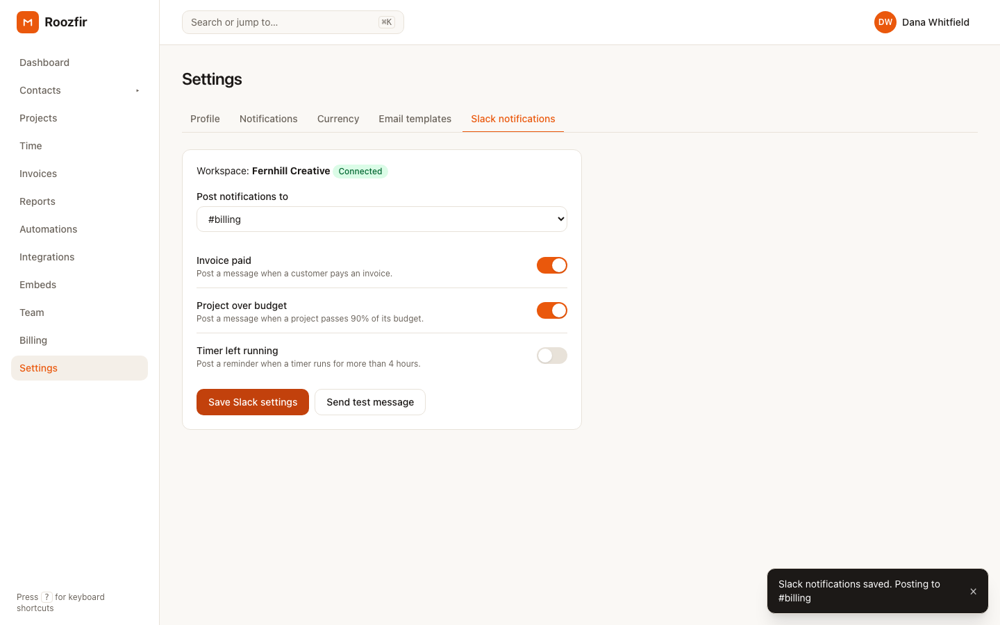

Help Center » Connecting other tools
How to choose which Slack channel gets notifications
Pick the channel Roozfir posts to and which events it should post about.
- Open Settings in the left-hand menu and click the Slack notifications tab.

The Slack notifications settings with a channel list and three switches - Under Post notifications to, choose a channel such as #billing.
The channel list with #billing selected - Turn on the events you care about: Invoice paid, Project over budget and Timer left running.
- Click Save Slack settings. Use Send test message to check it works.

The settings page after saving, with a confirmation message
Tip: Not seeing the settings? You will get "Connect Slack first" until you have connected it. See How to connect Slack.